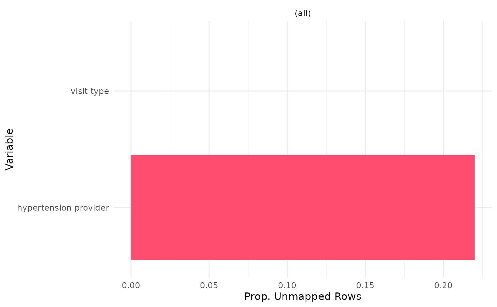

This is a completeness module that will assess the distribution of unmapped values, both proportionally and by examining
the median number of unmapped values per patient. The user will provide the variables (uc_input_file) to be evaluated and
define any values that should be considered "unmapped" (NULL is considered by default).
Sample versions of these inputs, both for OMOP and PCORnet, are included as data in the package and
are accessible with unmappedconcepts::. Results can optionally be stratified by site, age group, and/or time.
This function is compatible with both the OMOP and the PCORnet CDMs based on the user's selection.
Usage
uc_process(
cohort,
uc_input_file,
omop_or_pcornet,
patient_level_tbl = FALSE,
multi_or_single_site = "single",
anomaly_or_exploratory = "exploratory",
time = FALSE,
time_span = c("2012-01-01", "2020-01-01"),
time_period = "year",
p_value = 0.9,
n_sd = 2,
age_groups = NULL,
output_level = c("row", "patient")
)Arguments
- cohort
tabular input || required
The cohort to be used for data quality testing. This table should contain, at minimum:
site| character | the name(s) of institutions included in your cohortperson_id/patid| integer / character | the patient identifierstart_date| date | the start of the cohort periodend_date| date | the end of the cohort period
Note that the start and end dates included in this table will be used to limit the search window for the analyses in this module.
- uc_input_file
tabular input || required
A table with information about each of the variables that should be examined in the analysis. This table should contain the following columns:
variable| character | a string label for the variable being evaluated for unmapped valuesdomain_tbl| character | the CDM table where the variable is foundunmapped_field| character | the name of the field where unmapped values should be identifiedunmapped_values| character | a string or vector with each value that should be considered as "unmapped"concept_field| character | the string name of the field in the domain table where the concepts are located (if codeset is provided)date_field| character | the name of the field in the domain table with the date that should be used for temporal filteringvocabulary_field| character | for PCORnet applications, the name of the field in the domain table with a vocabulary identifier to differentiate concepts from one another (ex: dx_type); can be set to NA for OMOP applicationscodeset_name| character | (optional) the name of the codeset that can be used to define a variable of interest (ex: evaluate unit completeness for a specific drug)filter_logic| character | (optional) logic to be applied to the domain_tbl in order to achieve the definition of interest; should be written as if you were applying it in a dplyr::filter command in R
To see an example of the structure of this file, please see
?unmappedconcepts::uc_input_file_omopor?unmappedconcepts::uc_input_file_pcornet- omop_or_pcornet
string || required
A string, either
omoporpcornet, indicating the CDM format of the data- patient_level_tbl
boolean || defaults to
FALSEA boolean indicating whether an additional table with patient level results should be output.
If
TRUE, the output of this function will be a list containing both the summary and patient level output. Otherwise, this function will just output the summary dataframe- multi_or_single_site
string || defaults to
singleA string, either
singleormulti, indicating whether a single-site or multi-site analysis should be executed- anomaly_or_exploratory
string || defaults to
exploratoryA string, either
anomalyorexploratory, indicating what type of results should be produced.Exploratory analyses give a high level summary of the data to examine the fact representation within the cohort. Anomaly detection analyses are specialized to identify outliers within the cohort.
- time
boolean || defaults to
FALSEA boolean to indicate whether to execute a longitudinal analysis
- time_span
vector - length 2 || defaults to
c('2012-01-01', '2020-01-01')A vector indicating the lower and upper bounds of the time series for longitudinal analyses
- time_period
string || defaults to
yearA string indicating the distance between dates within the specified time_span. Defaults to
year, but other time periods such asmonthorweekare also acceptable- p_value
numeric || defaults to
0.9The p value to be used as a threshold in the Multi-Site, Anomaly Detection, Cross-Sectional analysis
- n_sd
numeric || defaults to
2For
Single Site, Anomaly Detection, Cross-Sectionalanalysis, the number of standard deviations that should be used as a threshold to identify an outlier- age_groups
tabular input || defaults to
NULLIf you would like to stratify the results by age group, create a table or CSV file with the following columns and use it as input to this parameter:
min_age| integer | the minimum age for the group (i.e. 10)max_age| integer | the maximum age for the group (i.e. 20)group| character | a string label for the group (i.e. 10-20, Young Adult, etc.)
If you would not like to stratify by age group, leave as
NULL- output_level
string || defaults to
rowA string indicating the analysis level to use as the basis for the Multi Site, Anomaly Detection computations
Acceptable values are either
patientorrow
Value
This function will return a dataframe summarizing the distribution of unmapped values for each user-defined input. For a more detailed description of output specific to each check type, see the PEDSpace metadata repository
Examples
#' Source setup file
source(system.file('setup.R', package = 'unmappedconcepts'))
#' Create in-memory RSQLite database using data in extdata directory
conn <- mk_testdb_omop()
#' Establish connection to database and generate internal configurations
initialize_dq_session(session_name = 'uc_process_test',
working_directory = my_directory,
db_conn = conn,
is_json = FALSE,
file_subdirectory = my_file_folder,
cdm_schema = NA)
#> Connected to: :memory:@NA
#' Build mock study cohort
cohort <- cdm_tbl('person') %>% dplyr::distinct(person_id) %>%
dplyr::mutate(start_date = as.Date(-15000), # RSQLite does not store date objects,
# hence the numerics
end_date = as.Date(20000),
site = ifelse(person_id %in% c(1:6), 'synth1', 'synth2'))
#' Execute `uc_process` function
#' This example will use the single site, exploratory, cross sectional
#' configuration
uc_process_example <- uc_process(cohort = cohort,
multi_or_single_site = 'single',
anomaly_or_exploratory = 'exploratory',
time = FALSE,
omop_or_pcornet = 'omop',
uc_input_file = uc_input_file_omop) %>%
suppressMessages()
#> ┌ Output Function Details ─────────────────────────────────────┐
#> │ You can optionally use this dataframe in the accompanying │
#> │ `uc_output` function. Here are the parameters you will need: │
#> │ │
#> │ Always Required: process_output │
#> │ Required for Check: output_col │
#> │ │
#> │ See ?uc_output for more details. │
#> └──────────────────────────────────────────────────────────────┘
uc_process_example
#> # A tibble: 2 × 13
#> site variable total_rows total_pt unmapped_rows unmapped_pt median_all_with0s
#> <chr> <chr> <int> <int> <int> <int> <dbl>
#> 1 comb… visit t… 1627 12 0 0 0
#> 2 comb… hyperte… 58 12 13 1 0
#> # ℹ 6 more variables: median_all_without0s <int>, median_site_with0s <dbl>,
#> # median_site_without0s <int>, unmapped_row_prop <dbl>,
#> # unmapped_pt_prop <dbl>, output_function <chr>
#' Execute `uc_output` function
uc_output_example <- uc_output(process_output = uc_process_example,
output_col = 'unmapped_row_prop')
uc_output_example

#' Easily convert the graph into an interactive ggiraph or plotly object with
#' `make_interactive_squba()`
make_interactive_squba(uc_output_example)